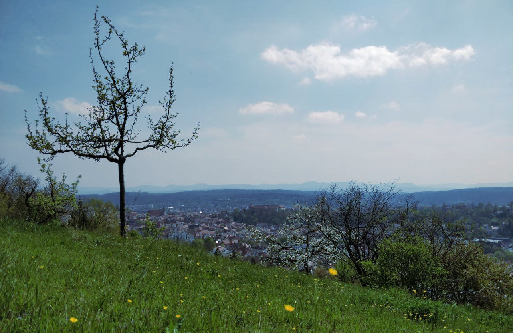

Tübingen is home to many Neuro and ML research institutes, most of which are located on its beautiful hills.
Format
IICCSSS 2023 will be a 5-day in-person event in Tübingen, Germany, from September 11 - 15.There will be talks, interactive workshops, an institute tour and a hackathon.
We will announce our speakers soon.
Fees
Other summer schools and conferences take high attendance fees. We want to make the event inclusive for everyone and keep the event free of charge. However, for your own commitment, you will be asked to pay a deposit of 20€. If you attend the summer school, we will reimburse the deposit.Of course, you will also be reimbursed, if you cannot make it, just send us an email then.
Who can attend?
The event is targeted mainly for Bachelor and Master students in Cognitive Science, Neuroscience, Linguistics and related fields. Also PhDs and Postdocs are of course very welcome.However, due to limited room capacity, we have to limit the number of participants to a maximum of 75 people, assigned by a first-come-first-served policy.
Travelling grants
To promote attendance of students outside of Germany, you can apply for travelling grants.You will have to prove that you travel from abroad and you should ideally sign up for active participation (see Participant contributions).
For more information, please write us an email.